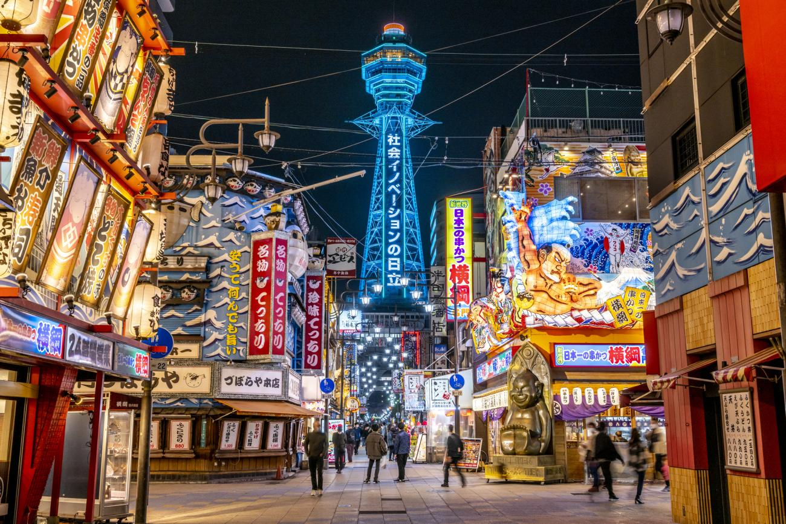

A Little Bit About Japan
Japan is an island country in East Asia. Located in the Pacific Ocean off the northeast coast of the Asian mainland, it is bordered on the west by the Sea of Japan and extends from the Sea of Okhotsk in the north to the East China Sea in the south. The Japanese archipelago consists of four major islands—Hokkaido, Honshu, Shikoku, and Kyushu—and thousands of smaller islands, covering 377,975 square kilometers. Japan has a population of over 123 million as of 2025.

Tokyo
Tokyo, Japan’s busy capital, blends the ultramodern and traditional, from neon-lit skyscrapers to ancient temples. The Meiji Shrine, famous for its tall gate and surrounding woods, is one of its cultural landmarks.
Explore

Osaka
Osaka is a vibrant port city known for its modern architecture, energetic nightlife, and amazing street food. It's located on the Japanese island of Honshu and is a commercial hub of the region.
Explore
More Information about Japan
Population
- The Yamato Japanese ethnic group makes up 98.5% of Japan’s population. Minorities include Koreans, Chinese, the indigenous Ainu, and the Ryukyuan people of Okinawa.
Languages
- Nearly all Japanese citizens speak Japanese, a language in the Japonic family. While unrelated to Chinese or Korean, Japanese has absorbed many Chinese and English loanwords.